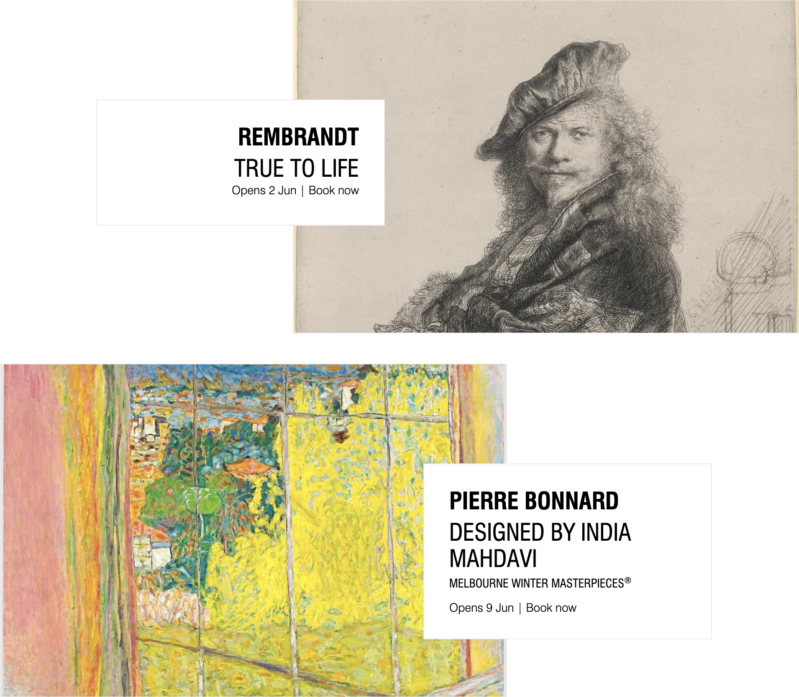

Interactive Experience Research Project
- Scroll down to view questions from Assignment 1, in relation to the NGV website, as seen below -

QUESTIONS
-
What was the first thing you paid attention to when interacting with the experience?
- Acknowledgement of country. Presented as solitary text in the center of the webpage,
allows the viewer to acknowledge the importance of the introduction without being overwhelmed,
while a single arrow below the acknowledgement presents a signifier to the user with how to continue.

-
Spend two minutes with the experience and create a list of each of your discrete actions.
- Scrolled down,
- Viewed current exhibitions,
- Selected 'View All Exhibitions',
- Scrolled through full list of exhibitions,
- Selected The Global Life of Design,
- Viewed introduction video,
- Scrolled down to view price, date, location of exhibition,
- Read up on information related to exhibit, artists statement,
- Selected related exhibit 'Global trade and the rise of luxury',
- Read through information on exhibit, viewed images of the exhibit,
- Continued through to 'Pleasure Garden', another exhibit being shown,
- Listened to audio samples featured in the exhibit.
-
What part of the experience did you spend the most time engaging with?
- I engaged most with the artists statement and descriptions of the work.
-
What was the most common action in your two minute interaction with the experience?
- Most common action was scrolling down, followed by viewing images and clicking links.
-
What is your impression of the intended primary goal of the interactive experience?
- The primary intended goal of the interactive experience was gaining insight into exhibitions prior to visiting the NGV.
-
What is your impression of how the interactive experience communicates its primary goal?
- Largely through text descriptions of the works. However, this is supported by audio and visuals to provide an informative and multisensory preview of the work
-
What is your impression of how the experience should be interacted with over time? (For how long and how many different times)
- Based on my impression; it should be used to quickly flick through upcoming events and exhibits, and for reading up on artists.
The homepage lists "Exhibitions" and "Events", with listed descriptions that provide the ability to quickly view availble exhibitions, whilst larger descriptions
offer a more in-depth view with supporting media.
Considering this, the time spent on the experience is between 5 and 60 minutes.
-
What is your impression of how the interactive experience communicates how it should be interacted with over time?
- The time and dates of exhibits and events serve as the primary signifier, located beside the link to the full description and at the beginning of each description webpage.
This visual cue communicates to users that the information is time-sensitive and can be regularly checked or updated.
Furthermore, the 'EXHIBITIONS' section on the main page displays only six exhibitions, with an option to 'see all exhibitions' below.
This affordance suggests to users that the homepage list of exhibitions is an updating preview.
Ultimately, this makes it easier for users to quickly check in and find out what exhibitions are available currently.
-
What other media forms (digital or otherwise) does the experience reference? Listing one or more references that it allows the user to fold in?
- The NGV website largely references a gallery exhibit. This is particularly seen under the 'EXHIBITS' section on the home page. Beside each cover image of
an exhibit, there is a smaller tile with a white background displaying the title, date and time. This largely resembles the wall labels seen in galleries. Furthermore,
the website largely resembles an exhibition catalog or program. Finally, the layout appears as a portfolio of works. This is attained through the use of rectangular boxes
and exceptional information hierarchy. Ultimately, it provides a sense of professionalism and clarity through a format that is easily digestable to the type of users the NGV could expect.
-
What does this reference or references suggest to you about how you should act when engaging with it?
- The media presented by the NGV provides a suggestion of focus and intentional, taking the time to read and appreciate the information presented.
The references suggest to the user to act thoughtful and receptive to new experiences.
-
What does this reference or references suggest to you about how you should feel when engaging with it?
- The central suggestion is to feel insightful. The information presented and the ways it is presented offers a glimpse into various times, and mentalities throughout the ages,
and delivers this through a format common to attendees.
-
What is the most frustrating element of the interaction to you and what makes it frustrating?
- Ultimately the most frustrating element of the interaction is the load time for videos and images.
Whilst a large function of the website is to provide insight and promotion of various exhibitions, this can be hindered by waiting for media to load.
Whilst the website has decent load times, this can make it frustrating to flick through various exhibitions quickly.
-
What is the most satisfying element of the interaction to you and what makes it satisfying?
- I find the website's design and navigability to be the most satisfying elements of the interaction.
The website's design aims to replicate the experience of visiting the NGV and supports the presentation of various artists' work.
The website's easy-to-use interface and well-organized headers and footers provide clear and concise information, allowing users to navigate freely through the website.
Additionally, subtle animations that appear when hovering over labels provide a comfortable user experience.